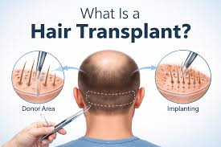
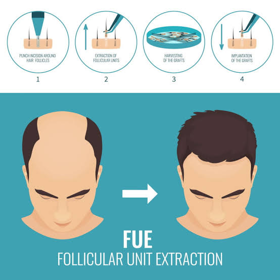
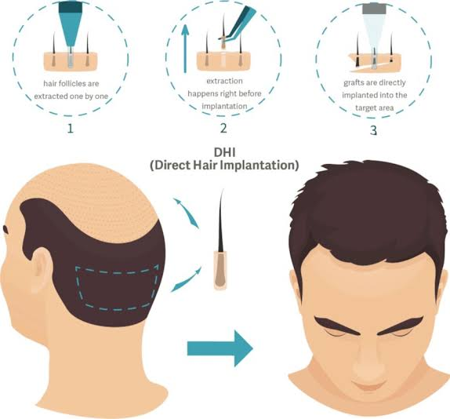
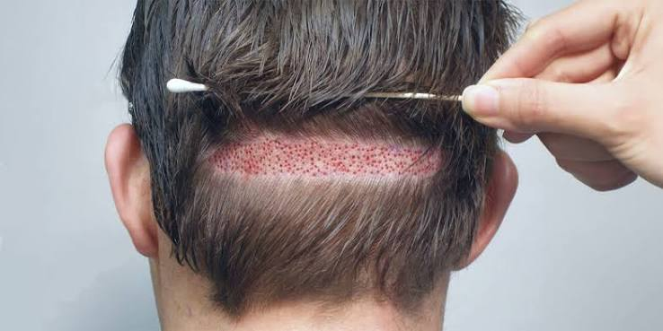
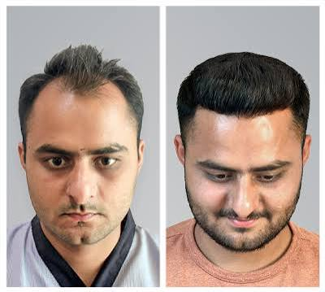

Advanced hair restoration designed to restore natural-looking hair density, improve hairline definition and enhance your overall appearance.


Hair transplant is a surgical hair restoration procedure in which healthy hair follicles are carefully extracted from the donor area and implanted into areas affected by hair thinning or hair loss.
At MARMM KLINIK, treatment planning is personalized according to your hair loss pattern, donor area, hairline and individual goals.
Your treatment journey from consultation to post-treatment care.

Your scalp, hair density and donor area are carefully assessed by our experts.

The treatment area is cleaned and prepared before the procedure begins.

Healthy hair follicles are carefully extracted from the selected donor area.

Extracted grafts are carefully prepared and preserved for implantation.

A personalized hairline is designed according to your facial structure and aesthetic goals.

Grafts are precisely implanted into the recipient area to achieve natural-looking density.

Complete aftercare guidance is provided to support your recovery and results.
Different techniques may be recommended depending on your hair loss pattern, donor area and treatment goals.

Follicular Unit Extraction involves extracting individual hair follicles from the donor area and implanting them into the recipient area.

Direct Hair Implantation uses a specialized implanter tool to place extracted grafts directly into the recipient area.

Follicular Unit Transplantation involves removing a strip of donor scalp and separating it into individual follicular units.
Designed to create a natural-looking hairline and improved density.
Transplanted follicles are selected from the donor area for lasting restoration.
Restore your appearance and feel more confident in your everyday life.
Treatment planning is customized according to your individual requirements.
Hair transplant may be considered for individuals experiencing different patterns of hair loss.

The procedure is performed under local anaesthesia. Your doctor will explain the process and comfort measures during consultation.
Treatment duration varies depending on the number of grafts and the technique selected.
Hair growth occurs gradually. Your doctor will explain the expected timeline based on your individual case.
The appropriate technique depends on your hair loss, donor area and treatment goals. It is decided after professional assessment.
Book a consultation with our experts and understand the treatment options suitable for you.